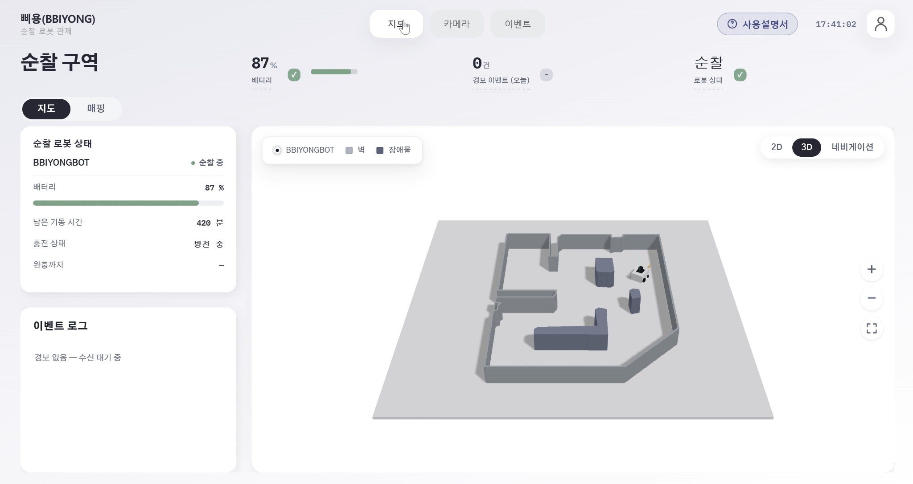

012026.07 — 08
실시간 로봇 관제 · 6인 팀
삐용 BBIYONG
자율 순찰 로봇의 상태와 화재 경보를 웹 관제로 연결한 시스템
- 담당
- 팀장 · Spring Boot 관제 서버, 인증, 로봇/웹 통신, 배포
- 기술
- Java, Spring Boot, WebSocket, STOMP, Docker, AWS EC2
영상 지연을 통신 경로에서 찾았습니다
로봇 영상이 약 6초 늦게 도착해 경보 직후 현장을 확인하기 어려웠습니다. 상태·제어 메시지와 영상의 전달 경로를 분리하고, 영상은 SRT·MediaMTX·WebRTC 경로로 전환했습니다. 프로젝트에서 기록한 지연은 약 0.3초까지 줄었습니다.
영상 헤더 규격이 달라 연결이 끊겼습니다
로봇이 보낸 영상 헤더는 40바이트인데 서버가 49바이트로 해석해 연결에 실패한 적이 있습니다. 실제 송수신 데이터를 대조해 길이 불일치를 찾고 프로토콜 상수를 통일했습니다.
로봇 주행과 AI 모델 최적화는 다른 팀원이 맡았습니다.
